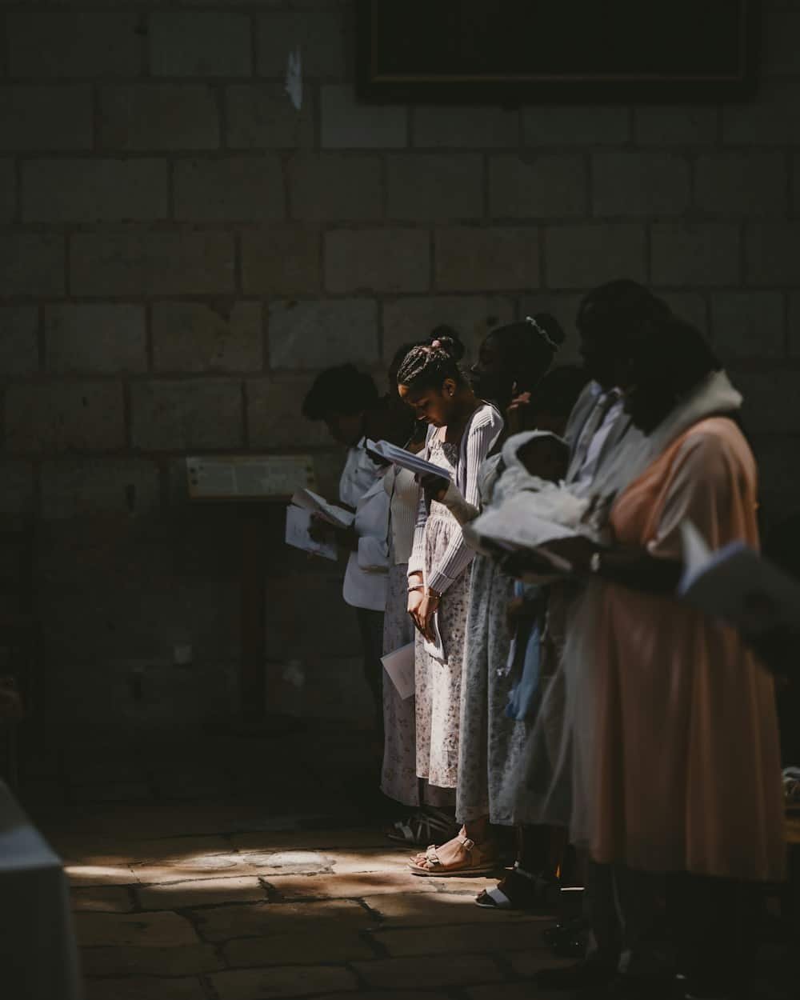

A choir that has sung in this building continuously since 1871, and an organ better than a parish this size deserves.

The choir
Sixteen voices, robed, singing the Parish Eucharist and Choral Evensong every Sunday in term time. The repertoire runs from Tallis to whatever the director has been persuaded into this month.
We audition nobody. If you can hold a line and turn up on Friday evenings, there is a stall for you — and the choir is the single easiest way into this church for anyone who finds the idea of coming to a service difficult.
Ask about joiningRebuilt in 1998 and worth the money.
Three manuals, forty-one speaking stops, originally by Hill in 1883 and rebuilt by Harrison a century later. It is a better instrument than a parish this size has any right to.
Organists are welcome to play it by arrangement, and students preparing for diplomas may practise free of charge — ring the office. We would rather it were used than admired.
Fridays, 6.30 to 8.00 in term time. Juniors from 6.00. New singers are simply put next to an experienced one and left to get on with it.
Thursdays from 7.30. Eight bells, the tenor at 14 cwt. Visiting bands welcome by arrangement, and complete beginners more welcome still.
First Wednesday of the month, 1.10 to 1.50, free with a retiring collection. Organ, mostly; occasionally something borrowed from the music school.